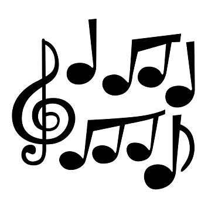

Evolution of Indian Classical Music
Types
Indian Classical Music has the basics concept of 'Swar'. Swaras are the melodious frequencies on which any song/composition is formed. There are in total 12 Swaras.
7 of them are main swaras(notes). Different combinations of these notes form a 'Thaat'. There are 10 main thaats in Hindustani Classical Music.
7 main nots are - Sa (Shadja), Re(Rishabh), Ga(Gandhar), Ma(Madhyam), Pa(Pancham), Dha(Dhiavat), Ni(Nishad).
7 main notes are called 'shuddha swaras', 4 others are called 'komal swaras' and remaining one is tivra swar. In total they make 12 Swaras(7+4+1)
Each Raga is a sub-part of Thaat. There can be multiple Raagas belonging to a same Thaat.
Khyal, Thumri, Dhrupad, Tarana are the major forms Hindustani classical music type.
Instruments and Notation System

Instruments typically used in Hindustani music include the sitar, sarod, surbahar, esraj, veena, tanpura, bansuri, shehnai, sarangi, violin, santoor, pakhavaj and tabla. Instruments typically used in Carnatic music include veena, venu, gottuvadyam, harmonium, mridangam, kanjira, ghatam, nadaswaram and violin.
Players of the tabla, a type of drum, usually keep the rhythm, an indicator of time in Hindustani music. Another common instrument is the stringed tanpura, which is played at a steady tone (a drone) throughout the performance of the raga, and which provides both a point of reference for the musician and a background against which the music stands out.
Other instruments for accompaniment include the sarangi and the harmonium
Indian classical music is both elaborate and expressive. Like Western classical music, it divides the octave into 12 semitones of which the 7 basic notes are, in ascending tonal order, Sa Re Ga Ma Pa Dha Ni.
unlike modern Western classical music, Indian classical music places great emphasis on improvisation
The underlying scale may have four, five, six or seven tones, called swaras
Why Classical Music is important ?
Our country has a rich heritage of arts and culture. And it is our duty to preserve, appreciate and pass on the same
to the next generation. Indian Classical Music teaches us the most basic and fundamental concepts of Music.
Because of its dedication, concepts, technicality and tenacious demand of Riyaz, classical music appears to be
difficult for some. But only when we dive deep into the realms of music, we understand it. Sometimes Without that leap of faith,
one is deprived of the beauty which classical music offers. And most above all, it has the power to make us feel emotins not with words
but through music.